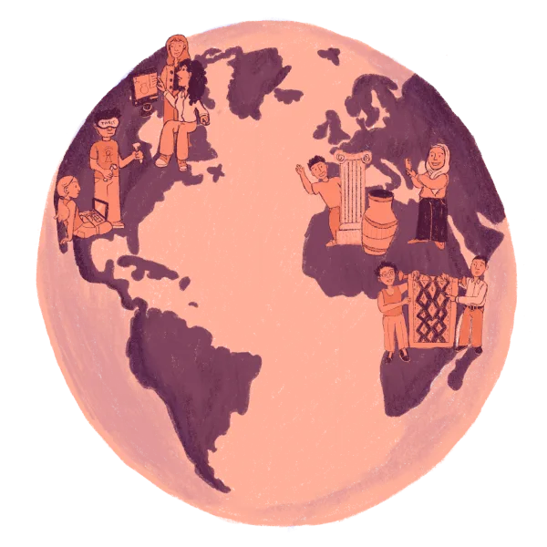

Tanit XR is eighty-five volunteers on four continents who bring Tunisia's endangered heritage into 3D and publish it free, for anyone, working alongside the institutions that look after the sites. Everything on this site was built without a single paid person. A partnership pays for the museum, the experiences, the training and the care of the places, and gives your team a real part in it.
Pick one, or shape one with us. We build each partnership around your team and your budget.
Skills-based volunteering with a clear task: optimise a scan for the web, research an object's history, translate a label into French or Arabic, build a piece of the virtual museum. Half a day or a season, online, with a volunteer of ours alongside. Everything your team makes is published under their names.
The museum is ours to build, room by room. Fund one gallery, from its walls to the objects inside and the stories Nura tells there, and it carries your name in the browser and in the headset.
Your developers and designers, our volunteers and our published scans, one weekend or one quarter: an AR lesson, a VR room, a piece for your own event. The kind of project your team asks to be part of.
With the authorities who look after the sites, a day of cleaning and care at a coastal site with local volunteers: travel, meals, gloves and bags, and a modest fee for the locals who show up. The sea is the clock we work against.
A workshop for your team on phone photogrammetry, on objects and places we are free to scan, with the method our volunteers use. A skill people keep, and a new way to look at the street they walk every day.
Our founder and team speak on community XR, phone 3D capture and heritage at risk: AWE, Voices of VR, Georgia Tech, the El Jem conference. Or we bring the 3D experience and a headset to your conference or office, with a volunteer to guide people through it.
Courses, mentoring for students, hosting and tools, the weekly call across four continents. The unglamorous part that keeps eighty-five volunteers working, and the first paid coordinator when we can afford one.
One promise we keep whatever the partnership: the archive stays free and open, and our volunteers are never made to work so that someone else earns. We sell training, events and our time, never the heritage.
Tell us about your team and what matters to you. We come back with two or three ways to work together, with real numbers.
Email info@tanitxr.org See the experience first